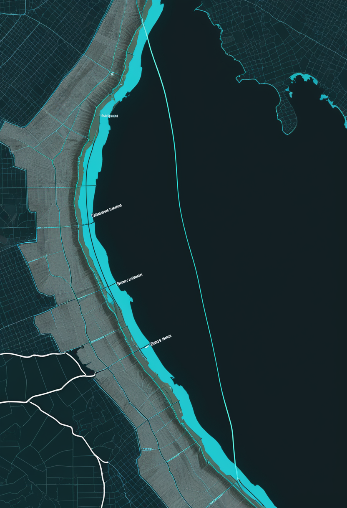
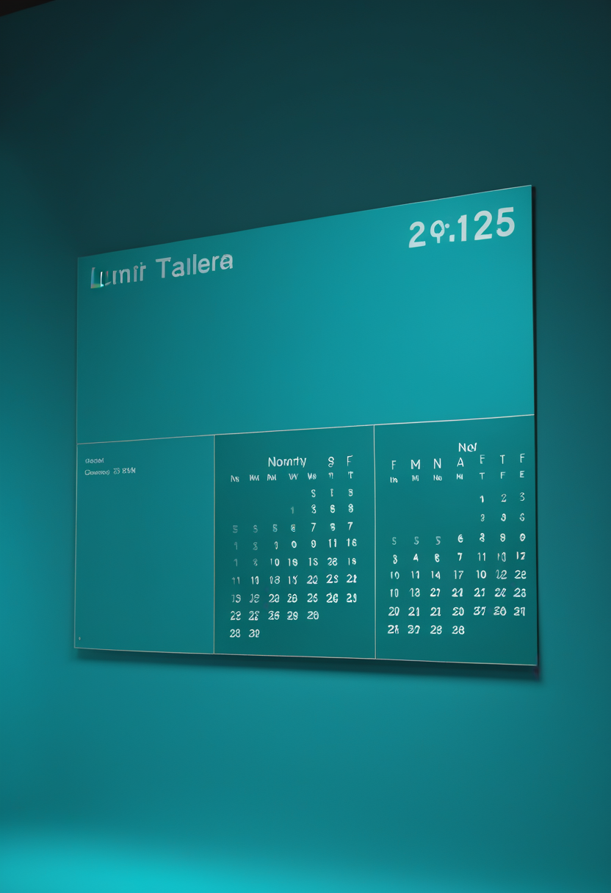
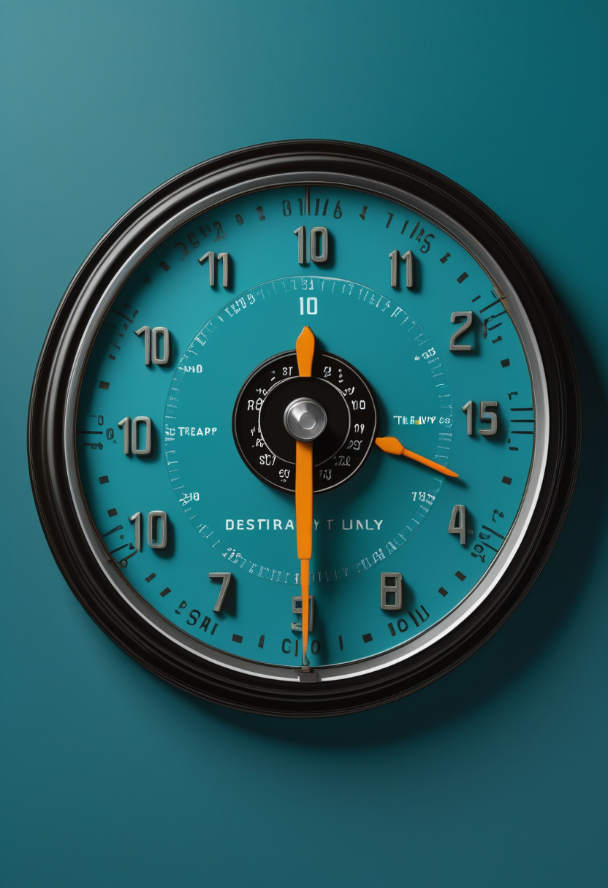
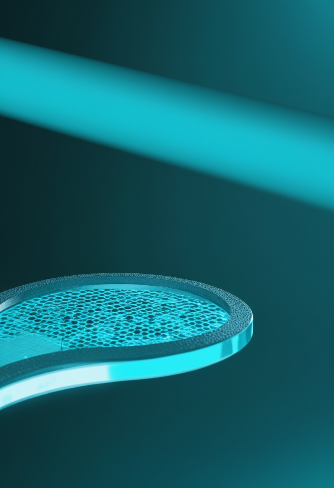
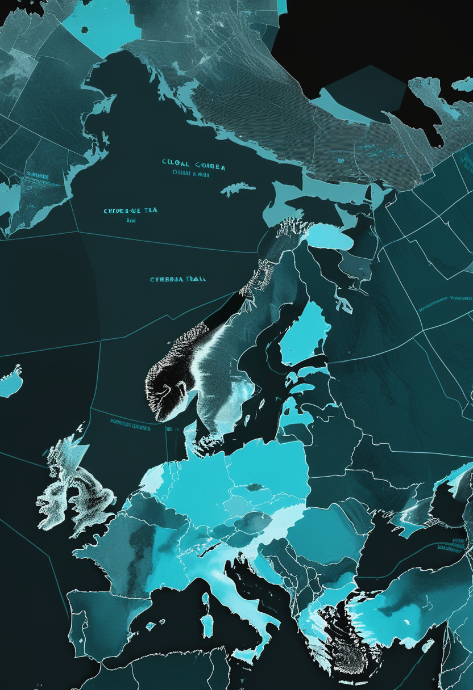
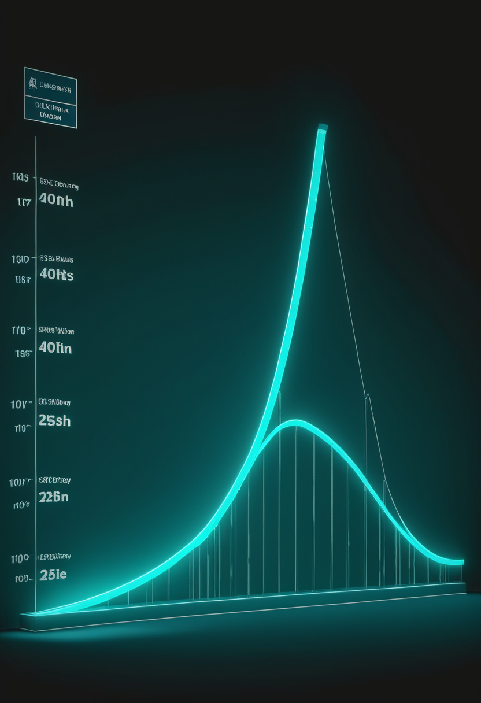
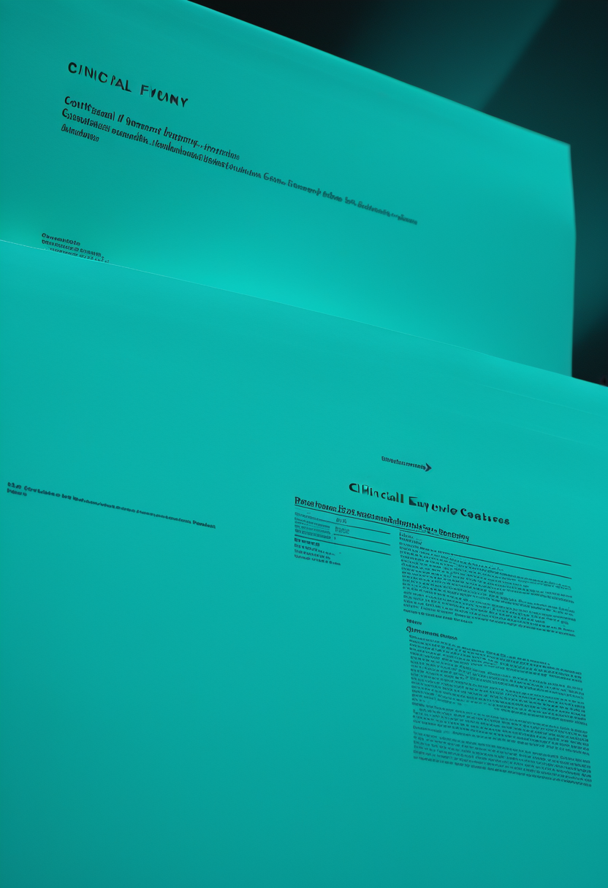

水曜日の便り。DRCのブンディブギョ型エボラは、WHOが9月14日に公表した疫学報告で確定7,258例・死亡3,510人に達した。DRC保健当局の前号報告との増加数(+58例・+35人)は一致するのに、州数・保健区数・接触者追跡率は食い違ったままである。命の章では、ISEMBYLDに骨折の注意が加わったこと、米国の新生児スクリーニングが全50州に届いたこと、サラネルセンの第III相に時期の裏づけが加わったことを伝える。自由の章では、Paradromicsの最初の植込みが6月17日だったという訂正、Neuralinkの植込み患者12人と2026年の量産計画、視線計測を心理学の道具として棚卸しした査読論文を報じる。基盤の章では、DRCエボラの二つの台帳に加え、世界のコレラが前年の6割の水準で推移していること、日本のインフルエンザが3週で約3倍に急増したことを伝える。畏敬の章では、ローマン宇宙望遠鏡がL2へ向けて航行中であること、量子計算の隘路が製造にあるとする5億カナダドルの工場構想、ハンチントン病の遺伝子治療AMT-130の申請が米欧二つの大陸へ広がったことを紹介する。美の章では、脳のデジタルツインを縛るのが計算力でなく観測であるという総説、写さずに当てる貯水池計算という道、BCIとデジタルツインが同じ設計図に載る査読前論文という、三つの『脳をどう写すか』を取り上げる。

WHOが9月14日に出した疾病流行情報(9月13日までのデータ)によれば、DRCのブンディブギョ型エボラは確定7,258例、死亡3,510人。致死率は約48.4%で、回復は累計1,726人、隔離または入院中は905人。前号で扱ったDRC保健当局の9月13日付報告(9月12日まで、確定7,200例・死亡3,475人)との差は、ちょうど+58例・+35人である。新規58例の内訳はイトゥリ44例、北キブ12例、オー・ウエレ2例で、合計も合う。数の増え方については二つの台帳が一致している。合わないのは地理と体制の記述で、WHOは『26州のうち6州・61保健区』とし、DRC側が示した7州62保健区(7州目はスュド・ウバンギ州)と、1州・1保健区ずれる。接触者追跡率もWHOは78.6%で、DRC側の88%と一致しない。最も重いイトゥリ州は確定5,659例・死亡2,583人、36保健区のうち28保健区。同州が確定例に占める割合は約78.0%で、前号の78.9%からわずかに下がった。
ISEMBYLD(apitegromab-mstn)について、承認の記事では見えにくかった副作用の側面が明らかになってきた。主要試験で最も多かった有害事象は咳・頭痛・上気道感染だったが、加えて骨折の危険が対照群より高く、一部は重篤だったと報じられている。筋肉そのものを標的とする初めてのSMA治療薬であることと、骨に関わる有害事象が無関係とは言い切れず、投与継続の判断には運動機能の改善(第3相SAPPHIREでHFMSEが対照より2.2点)との比較が要る。本紙は前号までにこの薬の有効性と価格(1バイアル11,659ドル、体重40kgで年間およそ42万ドル、正味約31万ドル)を伝えてきたが、家族と医療チームが並べる材料は、これで三つになった。

診断の側は、米国ではほぼ完成している。Cure SMAによれば、2018年7月にSMAが連邦の推奨統一スクリーニング項目(RUSP)へ加えられて以来、同団体と支援者の働きかけにより全50州で新生児スクリーニングが実施されるようになり、米国で生まれる赤ちゃんの100%が対象になった。ただし到達の時点については、37州の段階を伝える発表・85%を伝える3周年の発表・6年で100%に達したとする記述が並んでおり、本号では『全50州で実施』までを事実として採り、達成年は特定しない(要確認)。9月は米国の新生児スクリーニング啓発月間にあたる。前号までに扱った英イングランドの10月開始(まず7検査室・新生児の約72%を覆い、残る6検査室は2027年10月から)と並べると、診断の地図には国によって数年の差がある。

次世代アンチセンス薬サラネルセン(salanersen)については、本紙が伝えてきた第III相3試験の枠組みに、時期の裏づけが加わった。バイオジェンは2026年3月に第Ib相の追加データを示し、遺伝子治療をすでに受けた小児について1年間の安全性と運動機能改善の可能性を報告したうえで、同じ時期に世界規模の第III相計画を開始している。FDAの画期的治療薬指定(Breakthrough Therapy Designation)は2026年6月で、対象は過去の治療にもかかわらず進行が続く可能性のある患者である。年1回投与という設計が成り立てば、4週ごとの点滴が必要なISEMBYLDや、隔月の髄腔内投与とは、通院の負担が大きく変わる。
今日のSMA欄は、安全性・診断・投与設計の3本になった。ISEMBYLDは運動機能を2.2点改善する代わりに骨折の注意を伴うことが分かり、米国の新生児スクリーニングは全50州に届いたのに達成年ははっきりしない。サラネルセンが目指す年1回投与は、効果でも価格でもない三つ目の軸、つまり通院という負担を減らす方向にある。前号で『残る問題は支払いの地図』と書いたが、今号はそこに安全性の地図が加わった。

前号で本紙はParadromicsについて『2026年2月から組み入れを開始』と記した。区別を落としていた。2025年11月のFDAの治験機器免除(IDE)を受けて、ミシガン大学・UCデービス・マサチューセッツ総合病院が対象者の選別を始めたのが2月であり、実際の植込みはその後になる。同社の発表によれば、FDAが承認した初期実行可能性試験Connect-Oneの最初の外科的植込みは6月17日、ミシガン大学ヘルスで行われた。最初の被験者は運動ニューロン疾患で発話が難しくなったミシガン州の女性で、今後6年にわたり追跡・評価される。Connexusは高密度の微小電極アレイで神経信号を記録し、胸部に置いた送受信器へ送って皮膚を通して無線で外部受信機へ渡す構成で、前臨床では毎秒200ビットを超える伝送が示されている。
Neuralinkについて9月時点で報じられている植込み患者数は世界で12人である。いずれも重度の麻痺があり、思考によって画面上の操作と物理的な道具の操作を行っているとされる。同社は2026年に装置の『高量産』へ移り、手術をほぼ全自動の手順にする計画を示している。報じられている設計変更のうち具体的なのは、硬膜を取り除かずに電極の糸を硬膜を通して挿入する方式と、糸の後退(thread retraction)に対処する第2世代の電極設計である。ただしこれらはいずれも同社の公表と二次報道に基づくもので、査読論文や規制当局の文書では確認できていない(要確認)。前号までに扱ったVOICE試験と同じで、臨床の到達点と規制の到達点は別に数える必要がある。
視線計測の使われ方を分野横断で整理する作業も進んでいる。2026年3月にCureusへ載った物語的レビューは、2012年から2025年までの査読論文70本を対象に、認知心理学・情動感情研究・人間とコンピュータの相互作用における心理変数・臨床心理学の4領域へ整理した。前号までに扱ったJournal of Eye Movement Researchの科学計量論文(2020〜2025年のHCI論文1,033本)が『どこで使われているか』の地図だったのに対し、こちらは『何が分かったか』の棚卸しにあたる。専門会議の側では、視線計測研究・応用シンポジウム(ETRA '26)が6月1日から4日までモロッコのマラケシュで開かれ、手を使わない操作とアクセシビリティのための視線インタラクションが主題の一つに入った。入力装置としての視線は、支援技術の文脈で改めて中心に戻ってきている。
前号までに『規制上の資格』という軸を挙げた。今号はそこに日付という軸が足された。ParadromicsのIDEは2025年11月、選別開始は2026年2月、最初の植込みは6月17日で、どの日付を取るかで『どこまで進んだか』の印象が変わる。本紙が前号で『2月から組み入れ』と書いたのはこの区別を落としたためで、本号で訂正した。Neuralinkの12人という数字についても、公表の主体が同社である点は変わらない。装置の進み方を比べるときに必要なのは、到達点の種類と、その到達点を誰が宣言したかの二つである。
WHOが9月14日に公表した疾病流行情報は、9月13日までのデータとしてDRCのブンディブギョ型エボラの確定7,258例・死亡3,510人を示した。致死率は約48.4%、回復は累計1,726人、隔離または入院中の患者は905人である。前号で扱ったDRC保健当局の9月13日付報告(9月12日まで、7,200例・3,475人)との差は+58例・+35人で、新規58例の内訳(イトゥリ44例、北キブ12例、オー・ウエレ2例)とも合う。ところが流行域の記述は一致しない。WHOは『26州のうち6州・61保健区』とし、DRC側は7州62保健区(7州目はスュド・ウバンギ州)としていた。接触者追跡率もWHOの78.6%に対しDRC側は88%で、10ポイント以上の開きがある(要確認)。イトゥリ州は確定5,659例・死亡2,583人、36保健区のうち28保健区で、確定例に占める割合は約78.0%となり前号の78.9%からわずかに下がった。

エボラの陰で、コレラの流行はより広い範囲で続いている。ECDCが8月26日時点でまとめた集計によれば、2026年7月27日から8月26日までの1か月に世界で新規42,717例・新規死亡257人が報告された。国別ではナイジェリアが新規41,296例・242人と突出し、アンゴラ・ソマリア・モザンビーク・チャドが続く。2026年の累計(1月1日〜8月26日)は症例212,857例・死亡1,943人で、前年同期(2025年、338,340例・4,324人)と比べると症例数はおよそ63%の水準にとどまる。WHOが公式の多国間流行の疫学更新を出したのは6月30日付の第38報が最新で、ECDCの集計はそれ以降の期間を補う位置づけになる(要確認)。減少しているとはいえ、ナイジェリア1か国で世界の新規症例のおよそ97%を占める偏りは変わっていない。

日本のインフルエンザの立ち上がりは速い。厚生労働省が9月11日に公表した第36週(8月31日〜9月6日)の集計で、全国の定点当たり報告数は3.29となった。前週(第35週)の1.76から倍近く増え、前号までに伝えた第34週(8月17〜23日)の1.11からは3週で約3倍である。報告数の総計は12,299人で、前週から5,756人増えた。沖縄県は『注意報』級の水準に達している。流行開始の目安1.00を第34週に超えてからの傾きは緩まず、1999年の感染症法施行以降で2009年に次ぐ早さの流行入りという位置づけは変わっていない。
3本を並べると、感染症の流行は『測り方』と『広がり方』の両方で読み解く必要がある。DRCエボラはWHOとDRC保健当局で州数・保健区数・接触者追跡率が食い違ったまま数字だけが増え続け、コレラはナイジェリア1か国に9割以上が集中しながら世界全体では前年より小さい水準で推移し、日本のインフルエンザは定点当たりという指標で3週で約3倍になった。台帳が二つあること、偏りが大きいこと、立ち上がりが速いこと ― それぞれ別の意味で、監視体制への負荷になっている。
NASAのナンシー・グレース・ローマン宇宙望遠鏡は8月30日、ケネディ宇宙センターの第39A発射台からSpaceXのファルコン・ヘビーで打ち上げられた。目的地は地球から約150万km(約100万マイル)離れたラグランジュ点L2で、到達までおよそ3か月かかる。9月に入って機体の機能確認(コミッショニング)が始まっており、いまは観測前の準備の期間にあたる。広い視野と赤外線の解像度を組み合わせ、暗黒物質・暗黒エネルギー・系外惑星を対象に空の広い範囲を調べる設計で、探査の速さはハッブルの約1,000倍とされる。送り返すデータは1日あたり1.4テラバイトで、NASAの天文物理ミッションとして最も高い転送量になる。最初の画像の公開は2027年初めの見込みで、打ち上げから半年近くが観測の前に費やされる。
量子計算の隘路が計算方式ではなく製造にあるという認識も、投資の形になった。Photonic Inc.は9月14日、カナダに5億カナダドル(約3億5,910万米ドル)規模の半導体施設を建てる構想『Project VANGUARD』を公表した。狙いは量子計算・AIなどの分野で生じている製造(ファブリケーション)と実装(パッケージング)の隘路の解消である。前号までに扱ったチャルマース工科大学の『1回の駆動周期で操作を完了させる』手法(9月10日)が物理の側の近道だったのに対し、こちらは供給網の側の手当てにあたる。誤り訂正に必要な量子ビット数が減っても、その量子ビットを作る場所がなければ工程表は動かない。

uniQureのハンチントン病遺伝子治療AMT-130(一般名ifezuntirgene inilparvovec)の4年時点データは、本稿執筆時点(9月16日朝)でまだ公表されていない。手続きの側は進んでいる。同社は9月2日に米FDAへ生物学的製剤承認申請(BLA)を提出し、欧州医薬品庁への販売承認申請(MAA)も併せて出したと伝えられている。STATが9月10日に出した事前解説によれば、公表されるのは第I/II相の高用量12人・低用量12人、計24人の4年追跡で、焦点は効果の持続性にある。本紙は9月13日号から『9月中に公表の見通し』と伝えてきたが、月の残りは2週間になった。
3本はいずれも『観測の前』にある。ローマンはL2へ向かう途中で、最初の画像は2027年初め。Photonicの施設は構想の段階で、量子ビットはまだ1個も作られていない。AMT-130は申請が二つの大陸へ出て、肝心の4年データが後から来る。前号で『予想との差』を軸に置いたが、今号は差を測る前の待機時間が主題になった。
Nature Reviews Electrical Engineeringに2026年9月に載った総説は、脳のデジタルツインの限界がどこにあるかを問い直した。ウォーリック大学の研究者らによる整理では、模型の忠実さを決めるのは計算資源の大きさではなく、生きている脳からどれだけ細かく観測・計測できるかである。巨大な神経回路網を回せても、実際の脳を十分近くから見られなければ、模型に何を入れるべきかが決まらない、という論旨になる。この分野では最大で860億ニューロン・47.8兆シナプス規模の回路を個人のMRIによる制約のもとで回した例が報告されており、人の脳と同じ規模の計算そのものは視野に入りつつある(原論文は本号では未検証、要確認)。それでも足りないのは測定の側だという指摘は、前号までに扱ったショウジョウバエの全脳エミュレーション(139,255ニューロン)が電子顕微鏡による完全な配線図を持っていたからこそ成り立った成果であることと、表裏になっている。
同じ目標に別の道から近づく研究もある。2026年にAdvanced Scienceへ載ったDi Antonioらの論文は、脳のデジタルツインへ至る経路として貯水池計算(reservoir computing)を用い、系を線形化して将来を予測する枠組みを示した。神経の回路を一つひとつ写し取るのではなく、観測された活動から次に起こることを当てられる模型を作る方向にあたる。臨床での使い道はすでに具体的で、薬剤抵抗性のてんかん患者について脳活動の複製を作り、手術の方針を検討したり、刺激の設計をまず計算機の中で試したりする例が報告されている。写すことと当てることは同じではない。治療の道具としては、後者で足りる場面がある。
二つの領域が接近していることを示す査読前論文も出た。arXivに出た『Neural Digital Twins: Toward Next-Generation Brain-Computer Interfaces』(2601.01539)は、個人の神経活動を写し続ける模型をBCIの中核に置く構想を示している。装置が信号を読むだけでなく、読んでいる相手の模型を保持し、その模型に照らして意図を推定するという設計になる。前号までに扱った認知デジタルツインの統治の枠組み(権限・自律・アクセスと制御・説明責任・可用性の『5A』)は、この設計が実装された場合に、誰が模型を保持し更新するのかという問いへ直結する。査読前論文である点は留意が必要である。
今日の3本は『写す』『当てる』『使う』に分かれる。Nature Reviews Electrical Engineeringの総説は写すことの限界を観測に見いだし、Advanced Scienceの論文は写さずに当てる道を示し、arXivの査読前論文は当てた模型を装置に載せる。9月2日のMITマクガヴァン脳研究所の解説が置いた『完全な複製ができても意識の連続性は保証されない』という問いは、どの道を選んでも残る。
水曜日の便り。DRCのブンディブギョ型エボラは、WHOが9月14日に公表した疫学報告で確定7,258例・死亡3,510人に達した。DRC保健当局の前号報告との増加数(+58例・+35人)は一致するのに、州数・保健区数・接触者追跡率は食い違ったままだった。命の章では、ISEMBYLDに骨折の注意が加わったこと、米国の新生児スクリーニングが全50州に届いたこと、サラネルセンの第III相に時期の裏づけが加わったことを伝えた。自由の章では、Paradromicsの最初の植込みが6月17日だったという訂正、Neuralinkの植込み患者12人と2026年の量産計画、視線計測を心理学の道具として棚卸しした査読論文を報じた。基盤の章では、DRCエボラの二つの台帳に加え、世界のコレラが前年の6割の水準で推移していること、日本のインフルエンザが3週で約3倍に急増したことを伝えた。畏敬の章では、ローマン宇宙望遠鏡がL2へ向けて航行中であること、量子計算の隘路が製造にあるとする5億カナダドルの工場構想、ハンチントン病の遺伝子治療AMT-130の申請が米欧二つの大陸へ広がったことを紹介した。美の章では、脳のデジタルツインを縛るのが計算力でなく観測であるという総説、写さずに当てる貯水池計算という道、BCIとデジタルツインが同じ設計図に載る査読前論文という、三つの『脳をどう写すか』を取り上げた。
では、また明日の朝に。 — JaH